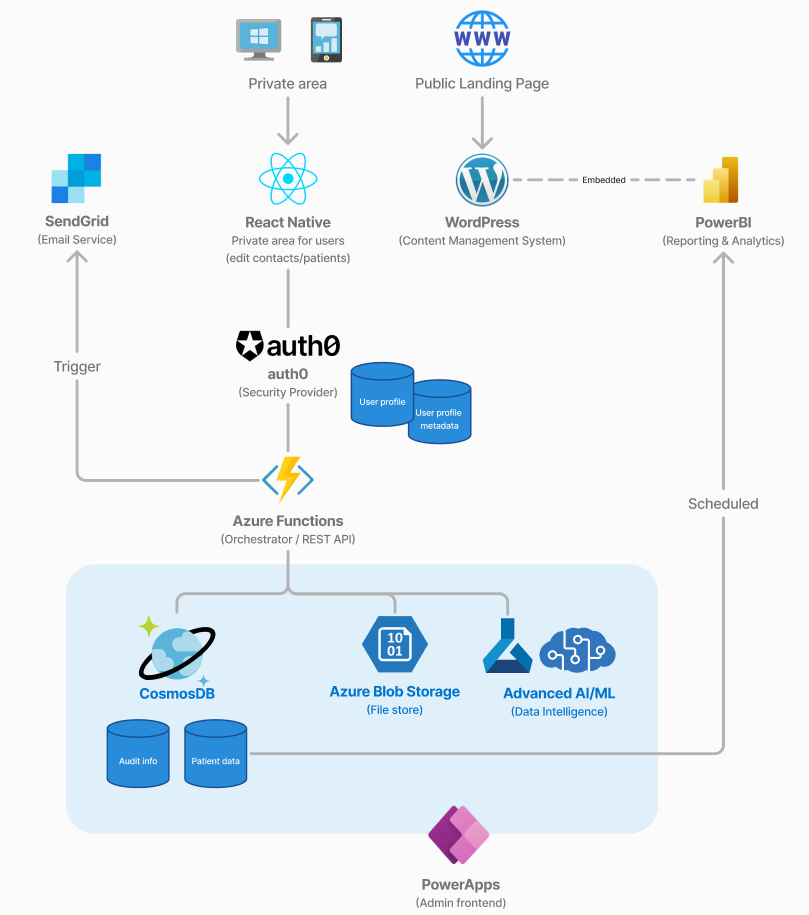

We are still finalizing the technical implementation details, but in the interim, this sections explains the main building blocks.

The WordPress CMS serves as the frontend for the registry, handling public-facing content and facilitating initial data intake via forms. This CMS setup is chosen for its simplicity, ease of maintenance, and extensive plugin ecosystem, making it ideal for hosting and managing content updates.
Gravity Forms is used within WordPress to handle user data intake, from initial onboarding to ongoing survey participation. It provides flexibility in form creation and allows easy integration with Azure services for data processing and storage.
The registry employs Auth0 for passwordless, secure authentication. Auth0 simplifies login management, allowing for secure access without traditional passwords, and supports two-factor authentication (2FA) for added security.
Primary Role: Authentication and identity management.
Integration: Enables secure access to both WordPress and the backend services.
Azure Functions act as the core orchestrator, managing workflows across different services. This includes processing form data submissions, managing file uploads, and ensuring that data flows securely and consistently between components.
The primary database for the registry, Azure SQL stores patient, contact, and relationship data securely. It offers flexibility for structuring longitudinal data and supports scalability for future analytical needs.
Azure Blob Storage securely stores uploaded files (e.g., genetic reports) linked to patients. Blob Storage provides scalable and secure file management, essential for large files and GDPR-compliant storage practices.
PowerApps serves as the internal admin interface for managing and reviewing patient registry data. This platform allows authorized administrators to perform CRUD operations and view reports in a user-friendly, customizable interface.
Power BI is used for reporting and analytics, providing a comprehensive view of patient demographics, registry growth, and survey results. It integrates directly with Azure SQL for seamless data access and visualization.
To ensure effective communication with registry users, SendGrid is used for email notifications, and Twilio for SMS alerts (e.g., for two-factor authentication). These tools support both initial onboarding communications and ongoing engagement.
All Azure services are configured within a secure Virtual Network (VNet) to enhance security, ensuring all internal services communicate over private IPs. Additionally, a firewall limits traffic to only authorized IPs.
Azure Application Insights provides logging, diagnostics, and performance monitoring for Azure Functions and other backend services. It supports real-time insights, helping to optimize performance and troubleshoot issues.